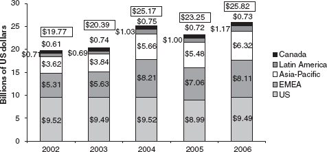

The implications of modularity undercut the utility metaphor in important ways. Modularity and interoperability of capabilities signal the demise of the utility model that depends on quasi-monopoly or duopoly in major software and service platforms. Various competitive strategies and architectures are emerging. The inflection point puts large parts of the industry’s value added in play.
The exploration of the implications of modularity begins with a closer look at how different competitors interpret the strategic import of the utility metaphor. These observations are then extended into a broader reflection on important competitive advantages by offering a “systems integration” model of ICT competition. Systems integration focuses on the building of complex, large-scale applications and capabilities. But does even that revision capture the real equilibrium for the ICT industry? To see whether it does, we conduct a thought experiment, using the “fashion industry” as a metaphor for market change and technological innovation. In this exercise we put aside the political economic controversies that will influence the equilibrium of the next generation of the ICT infrastructure, although we do flag some policy choice points.
Murky Clouds and the Systems Integration Metaphor
Consider Google’s and Microsoft’s visions of the implications of the Cloud. Both firms see the shift from desktop computer (or wireless terminal) to the Internet “Cloud” as a foundation for future of information architectures. Apparently Google embraces a “thin client” computing model where most of the data and application logic and computing functions reside in the Cloud and are available from any terminal. In contrast, Microsoft’s vision of “software plus services” assumes that the Cloud will be powerful and flexible enough to provide software services and storage on demand, but that much of the action will remain on individual terminals because of design optimization, reliability, quality of experience, or security considerations. This view reflects one implication of the Cheap Revolution; the terminal is powerful enough to play a larger role in defining functional service packages.
Microsoft’s aborted 2008 bid to acquire Yahoo underpins the importance of advertising and the scale implied in ad networks. Microsoft’s attempted takeover was an effort to buy more “eyeballs” and a broader ad network. It was trying to buy “audience” and the ad engine to “monetize” this audience. The reactions to the proposed merger by industry analysts questioned whether Microsoft could catch Google with this strategy. But many observers welcomed the idea of Google facing a stronger rival in search. Yahoo promised to deliver an ad-network capability superior to Microsoft’s, not just eyeballs. This would then launch a struggle pitting Google’s leadership in horizontal search against Microsoft’s leadership on the desktop (and, to a lesser degree, its strong position in enterprise systems and in particular servers).
That IBM is a third aspirant to “Cloud” leadership is sometimes lost in the frenzy that surrounds the Microsoft-Google rivalry. IBM’s approach shows that the Cloud also can enable another class of strategies built on extremely large-scale specialized platforms. In recent years, IBM has strategically acquired an extensive software portfolio focused primarily on middleware and complex integration capabilities for applications. IBM’s competitive strategy rests on integrating complex elements of enterprise applications into a single end-to-end solution that takes advantage of service-oriented architecture (SOA) to deliver unique (and sticky) value to its customers. IBM’s bet depends on a “systems engineering” metaphor; value comes from mastering complex integrated integration of many functions into complex applications.
IBM emphasizes open-source software for customer front ends and servers. They seek to neutralize entry from the customer interface (e.g., Windows) backward into the middleware. This approach also appeals to the software community worried about Microsoft’s market power.1 More important, the complex corporate solutions delivered by IBM rely on heavy use of mainframe computing power; thereby creating an internal “grid” that maintains demand for IBM’s mainframes. Indeed, the “ownership” of the mainframe platform is crucial because many of the functions envisioned for the Cloud are easy to launch from a mainframe architecture that respects enterprise security and existing IT architectures. Moreover, if its competitors’ analyses and the conventional wisdom of the industry are correct, IBM makes modest returns on the sale of services. Services are a tool for generating hardware sales, leasing computing capacity (in lieu of hardware purchases), and selling some middleware.2
In short, IBM is betting on large customers’ desire for systems integration and sufficient scale. IBM believes that existing large-scale grid implementations using mainframes will trump the lures of modularity for major customers, hold off encroaching general-purpose Web platforms, and strengthen its traditional mainframe-based offering. IBM’s approach rests on “good enough” implementations, not on actually being “good enough” for demanding corporate customers that require specialized solutions.3
IBM is not alone in using this approach. Cisco is placing a similar wager. It also dominates a critical ICT infrastructure platform, the router. Cisco’s goal is to work from the router into complex service applications. For instance, it seeks greater success in selling its routers to telecom carriers by creating enterprise application solutions that give a larger role to the carriers in the total system solution. This would provide telecom carriers with a larger piece of the Cloud and make Cisco the mediator between the telecom Cloud and the IT applications.
Earlier we noted that “systems integration” was one way to describe industry competition in the unfolding era. Some industry insiders wager that a “systems integration” strategy based on the tradition of large-scale project engineering will lead the future for ICT. If this is correct, then contractors will use modularity and broadband to build extremely powerful new solutions and then manage to make the whole package resistant to two competitive challenges. First, leaders with a dominant position on one critical piece of the ICT infrastructure try to work toward systems solutions from that base. Second, the sheer complexity of applications and solutions in terms of both architecture and stakeholders mean that in-market offerings can be sticky for extended periods of time.
The “systems integration” metaphor can be used to reinterpret the evolving Google-Microsoft story. Each firm controls a platform. Each wants to reach related market spaces with entries that build on their market strengths. The margins on both platforms remain healthy, but likely will be less spectacular than previously because of cross-entry and continued new entry along the margins of the platform (enabled by modularity). Scale and scope matter—particularly for ad networks—but it is not self-evident that it is the decisive factor in the adjacent market spaces for each company.
An Alternative Metaphor: The Fashion Industry
The high-end fashion industry provides an alternative metaphor for understanding how modularity could open new patterns of innovation and redefine markets.4 The fashion industry metaphor is as imperfect as the utility or systems engineering metaphors but it captures dynamics that are critical for modularity. On the supply side, the fashion industry is characterized by complex, disaggregated global supply chains where design, production, and distribution are tied together by global networks. These global networks feature flexible specialists that contribute modules (such as textiles, cutting, buttons, zippers, and leather) that can be assembled and distributed as needed on a seasonal basis in a “vertically integrated product” (a suit). Some specialists are large and capital intensive (fine textiles are products of complex production centers), but many of the inputs are on a smaller scale and emphasize specialized skills. There also is an element of Hollywood in that the fortunes of specific vendors rise and fall from season to season based on the continual search for short-lived “hit products.” There also is minimal lock-in of any single component (fabric, buttons), but there are significant scale and scope economies in distribution, branding, and design.
Modularity means that the fashion industry metaphor is salient even to the heart of the search and ad markets because these markets do not define the industry’s architecture in the same way that the IBM and Wintel (Microsoft-Intel) architectures did in their prime. So long as public policy reinforces modularity, all pieces of the ICT infrastructure will remain fundamentally (but not perfectly) interoperable, because programming languages and Web browsers are now standard on all major products and systems. Since all major vendors anticipate that significant elements of the overall system will be heterogeneous, they are increasingly building applications and services that rely on commonly accepted and used standards—even for important assets.5 This allows easier substitutability among applications, making it difficult for market leaders to leverage leading positions in one segment/application into neighboring segments/applications. Moreover, the cost of designing innovative Web services is declining because of the ability to “recycle” code embedded in common building blocks. In addition, new Web applications may be embedded with specialized terminals that are not controlled by the search and software giants (examples: the iPod and iTunes). Leading terminal makers also are increasingly entering services and software markets (examples: Amazon’s Kindle and Nokia’s purchase of Navteq), and that is contributing to a diverse strategic landscape.
Economy-of-scale advantages from the Cloud are likely to be more limited than most observers believe. This matters. Many in the industry that believe that Google’s scale in search will enable it to use its infrastructure advantages to lead in other information services markets. We disagree. Our scan of the landscape suggests that the scale required for search may not be replicated across information markets. In addition, many of the global system integrators already are delivering cloud services for enterprise clients at global scale, These more traditional, “boring” elements of the Cheap Revolution do not make headlines, but they suggest that scale will not be the key variable in the migration to the cloud. Indeed, inexpensive storage and computing make it easier for specialized players to match the giants’ economics when building to target specialized markets in information services.6 Modularity makes it easier to mix and match ICT infrastructure elements. Modularity brings carrier economics into play by marrying technology and new forms of financial engineering and business models. For example, application providers might flourish by purchasing services (e.g., Amazon’s S3 and EC2 Cloud) that already serve specialized Web businesses.7 GSX (a company spun off from GE) already provides major outsourcing of enterprise-scale Cloud infrastructure for electronic data interchange and supply chain management. And smaller companies can replicate many of the advantages of big firms that control private fiber-optic networks by using new peer-to-peer models for sharing inexpensive dark fiber capacity.8
All these forces are making “long-tail” niche markets more prominent, even in search. Specialized providers such as Kayak.com are offering niche search services and capturing significant query volumes. Their ranks will grow because of specialized demands in regional global markets and the many networked applications where specialized capability may outweigh general functionality of leading “cloud” companies. Modularity is opening the way to search capabilities geared to video, vertically specific applications, and people. As targeting and ad networks become more specialized, these more focused offerings are likely to command higher per-click prices than horizontal offerings and therefore could capture an increasing share of overall ad spending.9
Salesforce.com exemplifies the rise of focused solutions providers that leverage modular software and hardware. It also creates a dynamic ecology for developers. Salesforce.com assembled network and storage vendors to provide inexpensive on-demand computing and storage via the Web. Its competitive advantage does not rest on infrastructure control. Its advantage is at the applications layer, where it developed a programming language to allow firms to build customized, on-demand business applications. This creates a platform for other software add-ons.10 Other firms may use the features of mash-ups and ad revenues to build specialized applications combined with “leased” ICT infrastructure. MySpace, Facebook, and other social networking spaces also have promoted a complementary community of programmers and information services.
To illustrate the potential of the fashion industry metaphor, we examine four elements of current ICT markets: Apple and the terminal market, convergence and content, the rise of the “Personal Network Platform,” and fundamental R&D systems.
Apple and the Terminals Market
This subsection tells the story of Apple and how it informs the fashion industry metaphor. In some respects the iPod perfectly exemplifies the fashion industry metaphor. The extended iPod supply chain resembles value creation in the high-end fashion industry. Both depend on specialized inputs and high-end assembly, but integrate everything around a high-quality, high-concept fashion product.11 Apple vertically integrates all of the value added from the website through the hardware device drawing on a modular supply base.12 Integration provides an end-to-end experience with integrated end-to-end design and better ease of use.13 Despite the usual assumption of the business press that hardware is just a commodity, the most profitable aspect of the iPod package is its hardware, and the iPod is definitely a fashion accessory.
The discussion that follows makes three main points. First, Apple’s leadership position in digital music players (terminal and terminal software) has not translated into advantages in other content markets. Second, competition in music players and related segments (online services) remains rich because global supply chains have lowered barriers to new rivals constantly experimenting with alternatives to the iPod. Third, Apple—like Motorola with the RAZR—has limited capacity to sustain strong changes in fashion or a miss in the next product cycle. (Apple TV is widely considered a miss.)
The iPod also helps clarify the issues of leveraging and hardware competition in a modular world. For all its success, the iPod illustrates the limits of leveraging one element in the value chain (in this case the terminal) into adjacent market segments (digital content). The competition issues play out differently than in the 1990s. The iPod’s current dominant position creates network effects. and its software makes it impossible for alternative formats (MP3) to interconnect. Thus, iPod users benefit from more swapping opportunities as the pool of iPod users grows. This network effect produced pressures from European authorities to open iPod’s platform.14 In addition, iPod’s dominant market share worries others because the 1996 Digital Millennium Copyright Act (DMCA) makes it illegal to interoperate with the iPod without Apple’s permission.15 These concerns help clarify what is and what is not feared about Apple’s market position. As late as the 1980s, iPod’s success might have spurred a fear of Apple acquiring economies of scale that would lead to advantages in other markets. In the 1980s the mastery of one advanced manufacturing process with huge economies of scale provided advantages for attacking adjacent markets. At that time, this expertise propelled the Japanese economy.16 Over time, this advantage diminished because Dell, Ericsson, Motorola, Hewlett-Packard, and other end-system producers developed competitive responses. They created design, production, and distribution chains with improved efficiencies and cost savings derived from outsourcing to sophisticated manufacturing specialists. Eventually these firms evolved into today’s sophisticated original design manufacturers (ODMs). Collectively, these specialists mean that ICT firms can develop sophisticated make (build it yourself) or buy decisions when designing and marketing new products.17
The iPod also reveals how the Cheap Revolution is redefining hardware value. Networked services now are more central to hardware and software value because modularity helps equipment better respond to service designs from the ground up. Networked ICT once struggled to stitch together proprietary hardware platforms with complex code and clunky networks. Today, hardware design is planned as part of an overall applications package.18 This is the promise of both the iPod and Amazon’s Kindle. Both of these offerings are vertically integrated to deliver a compelling experience (hardware, software, and services complement). This is an important function of corporate strategy and design, but not a requirement for the products.
Modularity makes it possible for the system designer to mix and match where functionality resides. Routers had a relatively narrow functional mission to keep prices down while providing enough capacity to handle large traffic volumes. For example, Cisco now is investing heavily in health services management on the theory that the router and the software/ service design can be optimized jointly in powerful combinations. The implications of these changes are explored shortly.
Another dimension of the iPod story is the increasing share of data in the total value of a hardware/services package. Users’ inability to easily port data or iPod content to other applications may become a major ICT issue. It is the prime competition accusation made about the iPod. But modularity also undercuts the ability for iPod policies to seriously harm consumers on a sustained basis even with locked in content.
Digital content systems are abundant and market innovation for networked digital content takes many forms that are at least partial substitutes. (Many of the rivals embrace multi-sided platform strategies.) As demonstrated by YouTube’s growth, the iPod world does not dominate all online media experiences.19 Moves by NBC and Fox to launch their own websites and online services offerings and pull back content from Apple are proof of this concept.20 Moreover, customers swap out consumer electronics quickly and reasonably close substitutes are available if Apple makes mistakes on pricing or product.
The iPod case illustrates a major implication of modularity: pressure on market leaders in every ICT equipment and software segment is increasing. These changes undercut traditional advantages enjoyed by systems vendors. This weakens the certainty of strategies that are based on the “systems engineering” metaphor. For example, Cisco does not have a platform for Internet routers as Intel once did for integrated circuits for PCs. Cisco enjoys scale economies, rapid innovation of devices that support complementary hardware communities, and brand reputation, including for customer service. However, the leverage from its proprietary technology (its software code) over others is limited because the interface between the router and other network functions and servers is open and modular. Its efforts to build vertical applications out from the router also face rivalry from expanding substitution possibilities by players in adjacent markets or new entrants. Cisco allows VoIP to ride on its routers as a software application that may pressure traditional telecom service and equipment offerings. Meanwhile, IBM mainframes can provide both VoIP and router capabilities.
A further implication of modularity is that tensions could flare between terminal and network suppliers. As convergence and modularity progress, pricing and functionality can be strategically located, thereby creating new rivalries between terminal providers and telecom networks. For example, mobile network operators may respond by working directly with the Taiwanese suppliers, to create handsets that deepen the carriers’ control over customers’ experience.21 In response, traditional handset leaders, including Nokia and Motorola, may back public policies that weaken the control of mobile networks over their terminal equipment. Simultaneously, software vendors use ODMs to enter the mobile terminal market. Microsoft relies on HTC, a Taiwanese firm, for a significant share of Windows Mobile phone production. Google is giving “Android” (a Linux software package) to mobile phone suppliers that will feature Google at the center of the experience.
The iPod demonstrates three elements of the fashion metaphor. First, product life cycles are short; even leaders face substantial competitive pressure. Second, the iPod assumes a cloud-based services component (music, content) to complement the terminal, thereby enabling rapid innovation and choices between what forms and functions the terminal takes versus what relies on the cloud. Finally, the iPod also demonstrates the complex competitive landscape created by the presence of a sophisticated supply chain and the convergence of competitors from multiple geographies and segments in a single “market.”
Convergence and Content
As services convergence approaches, the rise of a true Internet Protocol (IP) network and broadband will restructure service and content markets. Large changes in pricing and geographic market segmentation are on the horizon. The major competitors in networking pursue single packages of wired, wireless, and video services running on IP networks. Substituting among modes of exchanging information, including email, voice, messaging, video, and data sharing from multiple sources is getting easier. As content and information services markets grow, for example, it becomes possible to deliver telecom services alongside high valued content. This means conventional “pricing” for individual services is under increasing pressure from cross-industry entry across the board. It also means that geography is a less significant barrier to entry—either on the supply side (the creation of new services) or on the demand side (in the consumption of services).
Convergence already has transformed telecom pricing. Where competition and government rules permit, the long-distance market for domestic calls is fast becoming a residual. The marginal cost of a long-distance call is close to zero. The rise of VoIP illustrates this point. By operating as a data service, VoIP arbitrages the remaining legacy costs of older telephone networks, including their marketing and labor costs. VoIP avoids the cross-subsidies included in long-distance prices that government regulators mandated. US cell phone systems already offer a single bundle of local and long-distance services. Local phone services, spurred by new deals offered by hybrid cable telephone services, are following suit. The further collapse of phone pricing matters because voice remains the largest revenue generator for networks. The introduction of 3G, IP-based wireless networks migrate this pressure to the mobile wireless space. In 2008 a smaller Japanese carrier, eMobile, offered $55 per month pricing for unlimited data use on networks delivering downloads at 1.4–3.0 megabits per second and providing VoIP. These practices are a challenge to older carriers and governments because margins on cellular subsidiaries were propping up the carriers’ business cases. Moreover, the rise of VoIP with true global numbering plans will allow much of the value added in voice telephony to be provided by global companies, such as Skype.
When combined with multi-band, all-purpose, digital appliances, new IP broadband networks also undercut the control of rigidly structured, terrestrial and satellite broadcast networks or cable television networks.22 This calls into question the assumed dominance of point (headquarters) to multi-point distribution and content models. Broadband content distribution further erodes the control of siloed, point-to-multipoint business models.
Peer-to-peer connections will weaken program syndication and media business advertising models because they rely on running the same programs and charging for separate ads in multiple geographic markets.23 As figure 4.1 shows, peer-to-peer traffic far exceed Web traffic on the Internet. Interviews confirm the Web folk wisdom that 5 percent of users generate more than half of the US Web traffic. Much of its content involves commercial media (including pornography) that often is copied illegally.24 Illegally copied content is becoming a convenient, close substitute for copyrighted material. Consequently, producers of copyrighted material are under pressure to substantially alter pricing, reduce the availability and dissemination of material (using DRM or other systems), or move to an entirely different revenue stream. Britain funds the BBC through a tax on televisions. Music companies might embed their content with ads.25 The European antitrust debate over iTunes is part of this broader discussion of how the future business model for digital music might look.26
Unlike the music industry, the worldwide film industry’s box office revenues increased dramatically since 1990, especially outside North America. Between 1990 and 2005 global box office more than tripled from just over $7 billion to more than $23 billion. During the same period, however, the U.S. share of global box office fell from about 70 percent to about 40 percent of the total. Figure 4.2 shows that these trends continued between 2002 and 2006, Although the American and Canadian markets remained nearly stagnant at just over $10 billion during this period, box office revenues increased in Europe, the Middle, Africa, Latin America, and the Asia Pacific during the same period from about $9.6 billion in 2002 to about $15.6 billion in 2006.27
A further consequence is that lower entry barriers for applications and content are creating new global content markets. The mass consumption, broadband market empowers a new set of lead users in households (not large businesses) that use technology to co-invent new digital applications. This is reflected in the mobile services being pioneered by Asian teenagers.28 It is also promotes thriving new niche markets such as Facebook, which began as a digital college yearbook and is now a major Web phenomenon. Critically, broadband networks make alternative programming and social communities possible. Online gambling and online gaming are growing rapidly in popularity worldwide. Online gambling is growing exponentially outside the United Stares (where it is legal) and significantly in the United States (where it is not legal). Online gaming was projected to triple from $2.5 billion annually in 2004 by 2007.29 At the end of January 2008, World of Warcraft, a hugely popular online video game, topped 10 million active subscribers worldwide—slightly more than half of them in Asia, one-fourth in North America, and slightly more than one-fifth in Europe.30

Figure 4.2
Global box office revenues, 2002–2006. Source: “MPA Snapshot Report: 2006 International Theatrical Market,” Motion Picture Association, April 2007.
It also is becoming easier to share and build social networks around user-generated content.31 The growth of YouTube is fueled by tens of millions of viewings of amateur music and video makers.32 In October 2006 Google paid $1.6 billion for YouTube, a stunning assessment of the power of this blend of multimedia and social networking.33 As tools for building communities and monetizing user-generated content evolve, the scale and depth of this content will soar.34
The Long Tail thesis applies to more than lowering the costs of marketing niche media products.35 It also applies to other markets where global demand is not homogeneous. For example, scale economies no longer preclude smaller markets from achieving world-class production values. For example, SK Communications, the huge online Web and gaming provider, is Korean.36 The quality of its software games rivals Hollywood movies, but its lower distribution costs mean that it is easier to market to Korean speakers in the United States. At the same time, the cost of converting content for other language pools is declining.37 The Chinese video game market is dominated by local producers and, to a lesser extent, Korean producers. Localization dynamics in growing markets meant that in mid 2006 only one of the 45 games most popular games in China (World of Warcraft) was produced by a Western vendor.38
If convergence means that the line between high value content and user-generated content is blurring (yielding to the “co-created application” with producers and consumers delivering the experience), then it is also blurring and pushing change in global advertising markets. Table 4.1 suggests that online advertising is growing at the expense of traditional, offline advertising. (From 2006 through 2008, the number of digital ads increased from about one-tenth to about one-seventh of the number of traditional ads.) As people spend more time online, marketers move online because they can earn a higher return on investment and benefit from better performance data that can be captured online. And the ad market is so large (more than $380 billion in 2008) that it is a huge incentive for new digital applications that can lure ads. Although the United States clearly is at the epicenter of this transformation (with more than 50 percent of every digital category), the pie is so large and growing so fast that it can fuel innovation in applications and content across major global markets (especially in view of the low cost of entry provided by the Cheap Revolution.
The growth of converged, online content markets and experiences spurred online ad networks for both large and niche online experiences. Google’s Adsense, the best-known example, sells ad placement to advertisers and places ads across the Web (on third-party websites that sign up for the service) in exchange for a fee (or vig). As people spend more time online, the opportunities for online ad networks to monetize these experiences will grow. Ad net works have opened up new economic models on the Web that react to what has come to be called “the attention economy.”39 This make ad networks the center of large amount of venture capital investments (such as targeting technologies, micro-payments, and niche markets) and the source of furious innovation. This “economic engine” is forcing three further changes.
The first implication is that ad-funded experiences (and online ad spending) will grow at the expense of offline spending. Traditional ads are a relatively inefficient way for advertisers to reach consumers. Online ads are more targeted and therefore more efficient for both consumers and advertisers. The initial search on a topic (e.g., searching for consumer reports on dishwashers) is a better “signal” of consumer interest for the seller than traditional “signals” (e.g., income or neighborhood). The ads triggered by the search are also likely to be more pertinent to the consumer’s interest. Thus, both the consumer and the producer can both potentially capture value from the exchange.
A second implication is that while the initial package of horizontal search and online ads was a great success, over time the degree of its preeminence will ebb. The reason is simple. Horizontal ad networks (Google or Yahoo) are unlikely to realize the click-through rates that more focused ad networks can deliver.40 Just as coupons evolved into loyalty programs and other ways for producers to capture data about consumers, ad networks are likely to become more sophisticated.
Modularity enables the growth of innumerable specialized services that support niche communities of consumers. Consider the many organizations that create both social bonds and consumption needs, whether they may be bowling leagues or bird watchers. Information services for these communities are being created, serving specific functional needs for their organizations. Although their business models vary, our interviews with the applications providers indicate a common dimension—specialized ad systems designed for these vertical niches.
Table 4.1
Global advertising market by format, category, and region. Sources: PricewaterhouseCoopers; analysts' reports.
The appeal of vertical niches is that user activity in these niches is an even better signal than a general horizontal search of a user’s interest in specialized sales offerings. Users’ activities on the application site can even be a stimulus for them to make the purchase decision at the time. (As an analogy, the sales of branded souvenirs and CDs at concerts of successful rock bands are predictably even more profitable than ticket revenue because attending the concert is a stimulus for consumption.) Thus, advertisers are willing to pay several times more than standard online rates for ads on these application sites. (A multiple of four is not unusual for strong sites.) This specialization in application services, and development of niche user communities, enables specialized search and ads as a significant rival to horizontal search ads. Modularity facilitates both the application and the specialized ad network.
The growth of vertical applications and ad networks is already emerging. A third implication of this economic engine is more nascent. Ad-funded software is a relatively imprecise way for consumers or small suppliers to “sell” their data to advertisers or larger service providers. Aspiring musicians complain that numerous social networking sites use their content to promote the popularity of the site, and thus generate ad revenue, without any form of compensation for the musician.41 Consumers involved in new websites that provide organization, storage, and even some analysis of personal medical information (including data supplied by the user, not just the doctor) will worry about more than privacy. They will eventually realize that this information is valuable to the website to sell targeted ads for medical services and products. At a minimum, they will become interested in what economic benefit accrues to the user for providing this information. (See the following discussion of the Personal Network Platform.) As we discuss in the concluding chapter, policy and technology innovation will create new forms for consumers and producers to “exchange and price consumer data.”
The Emerging Personal Network Platform
The ICT market traditionally divided into the enterprise and consumer/ small business markets. Enterprises’ spending fuelled long-term ICT infrastructure innovation, but the mass market for ICT created a second innovation stream. Modularity will produce a crossover between the personal mass market and the enterprise market. Consumer email service already is making its way into the enterprise and public institutions. The eventual result will be the emergence of the Personal Network Platform (PNP).
Table 4.2
ICT spending by government, business and consumer segments. Source: Digital Planet: The Global Information Economy (2006 report by World Information Technology and Services Alliance), at http://www.witsa.org.
| ICT spending for 2005 | $ billions | % of total | |
| Government (government, transport/communications, utilities) | 815.1 (505.2, 250.5, 59.4) |
27.50 | |
| Business (finance & business services, manufacturing, trade, other services, construction, agriculture, mining) | 1,474.6 (481.5, 433.1, 292.2, 201.9, 36.6, 12.5, 16.8) |
49.76 | |
| Consumer | 673.7 | 22.73 | |
| Total | 2,963.5 |
As table 4.2 demonstrates, the enterprise and government markets still dominate in ICT spending. But the jumping-off point today is the consumer market’s social networking, instant messaging, and user-generated content (of all types—from shopping reviews to personal videos). There already are aggregators, which connect existing data and micro-applications to function as “live portals” that connect various sources in a single place. VodPod and other companies aggregate online video sites, and Spokeo brings together social networking sites.42 Netvibes quickly built a base of roughly 10 million users, mainly by providing the ability for nontechnical users to quickly connect data fields from across the Web into a single interface.
The Personal Network Platform represents two intersecting forces creating a new synthesis. First, as Netvibes, Pageflakes, and the three major portals (Google, Yahoo, MSN/Live) illustrate, the flow, the form, and the diversity of user information have expanded tremendously. Users no longer just track and “file” their own information. They act more like firms of the past—huge assimilators of third-party information that is mixed and matched with their own creations. Users also access and manipulate information across many locations and devices. This requires powerful organizational capabilities for individuals that are tied to more than the PC.43 Second, the enterprise and public sector are following the consumer space experiments with “Web 2.0” capabilities.
A more flexible ICT network infrastructure allows enterprises to respond to “consumer-driven” innovation in the firm.44 Employees use software and services at home and expect similar levels of services at work. To attract and keep talent, enterprises must respond. They also can make business gains by deploying basic services across all segments of the workforce and new, specialized information services to specific user segments.
Consider the routine issue of calendaring. Employees want to reconcile their personal and office calendars, so some are turning to Web-based calendars on their cell phones to handle feeds from both. This raises new privacy challenges. For example, the details of a weekly McKinsey partner call found their way onto the Internet via a partner’s Web-based calendar.45
Consolidated calendaring is a start. Sales personnel want routing that optimizes the list of best sales prospects, a trip to the dentist, and a stop for dinner.46 Personal and business data must be mingled to optimize the lives of professionals away from their offices. Customer contact software for sales people began as a niche but evolved into customer management systems that provide a new way to organize work. Taken together these niche market applications are transformative.
The hallmark tools of “Web 2.0” also are migrating to business-to-business (“B-to-B”) applications. Firms are using “wikis” and social networking tools to build links across disparate work groups and with their suppliers and customers. (Individuals can do the same thing using wetpaint.com.) Motorola’s decision to use a wiki47 for customer support for the Q phone illustrates how even customer support for leading consumer electronics devices with short product life cycles is increasingly bottom-up from corporate employees and customers, instead of top-down from customer support staff. This explosive growth will propel more mingling of personal and business applications, periodically vexing chief information officers.
Web platform companies once focused mostly on consumers but now are entering the enterprise through offerings that combine personal services for employees and support of “Web 2.0” tools. Another example is Amazon’s S3 (Simple Storage Service) and EC2 (Elastic Compute Cloud) service, which provide online storage and processing. This online storage can be configured for backup capabilities if a firm’s internal storage is not sufficient for a specific application. This service highlights the blurring of boundaries across the Web, storage, bandwidth, and enterprise/consumer scenarios as new applications and services emerge.
The concentration of high-bandwidth IT in a limited set of business and personal arenas has received limited attention. Consider the factory floor. In 2000 it was unusual for a majority of factory workers to have corporate email accounts. Firms have scrambled to correct this but try to cut the costs of building new IT infrastructure. One emerging option is that Web firms can deliver and support email and information services infrastructure as a “white label” for the corporate host.48 This is a search for eyeballs that generate ad revenue and data sources that can be sold to other specialized information services suppliers.
These beginnings may lead to a single “personalized network platform” (PNP) built on Web technologies that combine the performance and security of corporate applications with the ease of use, flexibility, and personal scope of Web applications. The PNP would integrate the traffic, content, and applications of individual consumers as they participated in the corporate world, and vice versa.
The PNP will require innovations in ICT capabilities and business and government policies. For example, it would require powerful tools for managing identities. Suppose you are Maggie to family members, Margaret to business colleagues, Shop Wiz to e-commerce vendors, and Girl Scout to online game players, and that you maintain separate emails and profiles for each identity. A PNP would require public and corporate policies to manage the negotiation of the disclosure and sharing of privacy information. An employment contract would probably have to contain terms for sharing private information on the corporate networked applications (e.g., human resources access to certain health information).49
The PNP is part of a new innovation system that illustrates the horizontal widening of networked ICT outside traditional locations (e.g., office buildings) and the vertical application into a new hybrid of business, social, and personal processes.50 As with all technology edges, it is unclear how these changes will develop, but its early manifestations are becoming apparent.
Less bandwidth-intensive examples show the horizontal potential of the wireless revolution. Existing services already spur users, including low-income ones to invest in connectivity. SMS, for example, is a valuable resource in medical emergencies in poor rural areas. Farmers worldwide increasingly use cell phones to check market prices offered in nearby towns. China Mobile, for example, provides farmers with the prices of different crops at different regional markets to help them guide planting and marketing decisions.51 These low bandwidth innovations will multiply. The implications at the inflection point will be profound. The “precision agriculture” movement will move to poorer countries as the cost of “smart” tractors or plows decreases and broadband wireless emerges. These packages will deploy sensors and feed information on soil conditions to artificial intelligence systems that advise farmers in the fields as they decide on plowing and fertilizers. Large agriculture supply companies will share their ICT capabilities with their customers as a marketing tool. ITC, an Indian tobacco and agricultural supply company, is already a leader in deploying rural ICT data services of this type.
The vertical potential already is evident in existing rich media applications. They can pull audio, video, and data from disparate sources and at the same time request data from corporate databases. Now, think of what nike.com could be like if, instead of pulling data out of inventory files, a PNP pulled data from an individual’s health monitoring files and suggested an appropriate shoe to buy for workout routines.
Even as large players expand into this space, modularity opens the way for an explosion of new, niche applications to serve the “long tail” of demand for software and services.52 Standardized software components and data that can be combined into new applications yield a proliferation of micro-apps focused on ever-smaller slivers. As barriers to entry to software production fall, “user-generated software” proliferates, but not the software created by vendor developers or designers.
As the PNP evolves, it provides incentives for both producers and consumers to enter into sophisticated “bargains.” For example, chain grocery stores lure customers with loyalty cards that promise lower prices on some items. This allows the store to create more accurate user profiles. Such developments have complicated consequences. In this instance the grocery industry becomes more efficient, thus lowering its cost structure, which is beneficial both for the stores and consumers. But critics note that it would be more accurate to state that stores are raising prices for the discounted items and charging a premium to customers who will not join the program. Consumers increasingly must choose between sacrificing their privacy if they permit purchases with smart tags to be tracked or paying a premium for products and services.53 Concentrated vendors may sometimes wield so much market power that their influence over customers is significant and easy remedies do not exist.
Nonetheless, consumers may gain important benefits as well. Unified medical databases may help save lives.54 Or, health insurers might charge patients more unless they are allowed to track their compliance with prescription medication regimens. This may help guarantee that patients take their medicine, but it also provides insurers with a reason to cut off benefits for noncompliance. At a time when insurers are accused of not extending benefits or cutting them off if treatment is expensive, this could raise concerns. To safeguard against possible abuses will require developing new norms and practices related to the ways to let the PNP grant varying levels of permission for tracking depending on the decision of the user about privacy.55
This will be challenging because there still is no clarity about what constitutes public versus private data. Is an individual’s health care data really private? Changes in what constitutes private data are evolving rapidly. With significant co-investment in the creation of data how should we define the ownerships of an address book on FaceBook, travel itineraries on TripIt, or house data on Zillow? Ultimately “Web 2.0” and related applications (including online content) will create huge amounts of new public data without clear property rights—end users or companies can take advantage of it yet ownership is unclear. Organizations such as dataportability.org are a start, but are narrowly focused on social networking, not on the broader problem. In the summary chapter we will lay out reasons why this is a critical area for policy innovation for consumer and producers to take advantage of the innovations enabled by the inflection point.
High-End R&D: Leaving the Lab
The Cheap Revolution, modularity, and pervasive broadband networks open the potential for radical new users for ICT and radical new business models as ICT leaves the cloistered world of “the glass house.” Today, leading research universities are marrying advanced ICT to conventional disciplines to adhere the power of silicon economics to more traditional research questions and challenges. For example, millions of remote sensors for medical, environmental, and other applications generate huge amounts of new data for research and management. The intersection of these huge data sets and associated technologies, combined with Cloud-style systems, means that huge data collection, monitoring, and analysis operations can routinely help guide environmental controls, monitor personal medical treatments, and more.56 This creates new research opportunities, new research models, and ultimately new sets of ICT capabilities. All of this matters because basic R&D is central to the commercialization of ICT.
Most analysts overlook the importance of basic R&D for commercialization of ICT. Today, at the bleeding edge of research57 in US universities, large-scale computation and new observational systems are redefining disciplines. Bioinformatics, for example, is transforming biology. At the same time, early prototype sensor systems help biologists study seabird nests and redwood groves.58 Similarly, wireless sensor networks tied to local computers could monitor animal flocks and herds to provide early warnings of disease outbreaks while simultaneously producing huge new databases that could advance veterinary medicine.59
More ambitiously, consider medicine. Researchers imagine medicines with smart tags that can verify the authenticity of suppliers and distribution data if there is a recall. The same tags could interact when put side by side to warn of possible complications if the medicines are taken together.60 They also could interact with monitoring devices inside patients that continuously transmit data that permit the creation of smart profiles of a patient’s medical conditions that could in turn interact with prescription medications to monitor for complications or compliance. Or, these profiles might produce automatic alerts to see a doctor or cause the release of medicines implanted in the patient. Deploying powerful, inexpensive networked applications on this model could generate huge health-care savings.61
Such applications also will fuel new business models. Big pharmaceuticals are experimenting with offering “open-source” licenses for important research inputs that they develop. This allows them to (1) commoditize these aspects of the research and production system, (2) create a shared research community to leverage their expertise on these phases of the research task, and (3) focus on what they consider their critical advantages.62
New models for research and systems management also are in development. As the number of available real-time data observations for patient populations expands significantly, the medical research and care system will morph, propelling changes in the patterns of creating and testing drugs and medical devices. Patient tests will be run outside medical labs, allowing greater flexibility and removing many restrictions that hamper research. One major medical research challenge is to determine the extent of the relationship between genetic and environmental factors in the onset or absence of disease. Sensor tracking and monitoring systems will allow more precise recording of patients’ behavior and environmental surroundings, expanding research and treatment options.
Similarly, the management of environmental problems intersecting with crop yields, air quality, running the electric grid, or climate change will evolve when evidence-based evaluation systems process billions of observations and provide real-time feedback to applications of commercial and social value.63 At present, even the best climate models are too imprecise to allow a large state such as California to plan with any granularity about water management issues when considering changing weather patterns.64
The cost and complexity of many state-of-the-art research facilities raises another fundamental challenge for science. The capabilities and costs of research and design tools for products created by computational chemistry and nano-level materials sciences are on the rise, requiring more cost sharing and large communities of virtual users. The data storage and processing needed to produce these systems demands immense quantities of bandwidth and complicated software tools. For instance, the collaborative visualization systems that link researchers and data in supercomputer systems can require half a terabyte of data on the network. The fields of advanced visualization and bioinformatics are using networked supercomputing to allow researchers to walk through “virtual” gene strands to visualize research possibilities in new ways. Biotech firms are scrambling to be linked to these research tools. (Figures 3.4 and 3.5 illustrated the growth in network traffic as major research facilities were networked together.) A few commercial users (e.g., oil companies that model possible exploration sites) already are populating this territory. New collaborative computing facilities likely will emerge from grassroots organizations, much as the search for extraterrestrial intelligence (SETI) was an early application of grid computing. These may tackle major modeling challenges, such as improvements in how to design sustainable buildings and vehicles.
New research tools do not guarantee effective innovation. It takes changes in the organizations of markets and institutions (both commercial and non-commercial) to tap these capabilities. It requires translational organizations to create network links among research projects and between researchers and potential innovators in business and government.65 The point is: prospects for data and computationally intense innovation performed collaboratively and globally are emerging at the inflection point.
Today’s high-end labs will inform future commercial applications. This was true in the past and is probably still accurate. This signals a move toward a world of diverse terminals (some powerful, some dumb, and almost all incredibly small and cheap relative to their function). These terminals will rely on ubiquitous networks to capture and deliver data in new and startling ways. Moving data from the natural world into the ICT fold will accelerate this process and will create new applications and new uses around this data. In view of the specialized nature of many of these applications, a blossoming of specialized devices and information services providers is inevitable. Moreover, the low cost of distribution and the presence of sophisticated global supply chains to design and deliver products will result in a world that resembles Silicon Valley more than the traditional pharmaceutical market where scientists in biotech rely on “big pharma” to take new products and compounds to market.
Stumbling Blocks along the Road to a Digital Paradise
This analysis of the implications at the inflection point concludes with a brief discussion of likely policy controversies. We begin with long-standing concerns about competition and innovation, and then turn to transactional inefficiencies that may undermine the inflection point’s promise.
With the initial introduction and spread of competition, the main worry was that dominant firms—traditional telecoms or the victors of winner-take-all competitions for semiconductor and software platform superiority—would be only marginally responsive to consumers, providing expensive services, slow innovation, and reduced future competition. These concerns still echo in policy-making circles. Although increasing modularity should limit these risks, difficult issues remain. Even with the beginning of competitively provided broadband, some issues related to network infrastructure remain.
To paraphrase Bill Clinton’s 1992 campaign: “It’s the bandwidth, stupid!” No country has resolved fully the broadband issue and the availability of ample networked broadband is indispensable to fulfilling the inflection point’s potential. Despite improvements in wireless networking, high-end data flows are a long way from being ubiquitous. Future prosperity depends on the provision of ample network capacity, seamless inter-networking, efficient pricing, and flexible responses to the many sides of the networked ICT platform.
The contrast between rich and poor countries on networking is deeply disturbing. Mobile networks and competition are helping solve connectivity problems in regard to voice and narrowband networking, but the provision of true broadband and ultra-broadband, even at the backbone level, remains a challenge for bridging the digital divide.66 Figure 4.3 shows that international traffic across the Atlantic and Pacific still dominate, The data for Latin America and the paltry flows involving Africa are out of date, but only slightly.
In wealthier countries the problems are less dramatic, but they are real. The roadblock is that so far in the United States the spread of broadband for consumers and small and medium-size businesses is deplorable. As of mid 2007, the US had fallen from the top of the international rankings for broadband ubiquity and speed to number 14.
Still, major customers usually have the bargaining leverage to secure whatever network facilities they need. But even in the United States the number of huge customers is quite small. For example, one regional Bell considered only its largest 400 customers—those that spent more than $2 million annually—as top-tier customers. In 2004, fewer than 10,000 of that company’s customers spent more than $100,000.67 Although smaller customers can gain from their presence in large office buildings or corporate parks, the availability of big broadband rapidly drops off below the Fortune 500, the largest urban office buildings, and the major research universities.68 Indeed, competition even for office buildings is weaker than commonly assumed. In its approval of the AT&T-BellSouth merger, the FCC discovered that AT&T only provided its own competitive broadband facilities to 317 office buildings in BellSouth territory. Only 31 office buildings in BellSouth territory had AT&T as the exclusive provider of fiber access facilities.69
There is one mitigating factor. US consumer broadband is slow, expensive, and less ubiquitous than the world’s leaders, but the US is ahead of most countries in building out its competitive broadband infrastructure. (Most countries rely primarily on regulators to require network sharing by the dominant carrier.) Although it still designs its residential plant for much slower speeds than it is capable of providing, cable television now is a real rival to the local phone companies and it aggressively markets broadband to small business.70 Moreover, the western US in particular has huge municipal fiber capacity that is waiting to be unlocked. And the US may manage to deploy wireless broadband more extensively than others. Of course, poor regulatory choices in the US and elsewhere could prevent progress toward the future pictured here.71 We support regulatory reform related to pricing and supply that eliminates or at least minimizes the need for future regulation.
A second issue involves networking as competition increases. The greater centrality of networked ICT allows for new twists on reciprocal compensation. A fair and reasonable system is needed to allow networks to compensate each other for exchanging traffic.
A third issue arises because some parts of the ICT network infrastructure may create competition problems not identified in second-era policies. It always is tempting to apply guidelines that succeeded at an earlier technological stage and recycle them in competition policy. Evidently, EU, Japanese, and Korean competition authorities are determined to fight the type of leveraging of platforms that they associated with the second ICT era and the influence of Intel and Microsoft. This emphasis could be ill conceived at the inflection point. This pertains to parts of the ICT infrastructure that change more slowly for a variety of reasons, including slower turnover in hardware.
IBM’s strategy of using Grid-style computing to achieve more ambitious software solutions involving larger databases (e.g., to reinvent business processes) was discussed earlier. Many European firms have similar plans. These solution packages represent forms of vertical integration extending from enterprise data to end services. The large data centers and their supporting infrastructure are renewed constantly, but not at the vociferous rate of consumer items. Moreover, many solutions require complex consensus decisions among many independent stakeholders to design and modify the application.72 Thus, these integrated solutions may have greater staying power for vendors, but their specificity makes them unsuitable for creating general platforms.73 This is true because often the solution is embedded in physical elements (smart transportation systems, GPS systems) and because there are political processes whose complexities make it hard to reopen competitive alternatives for these complex systems.
The complex system applications that need the consent of many stakeholders permit strategic games and policy choices that could raise significant obstacles. The challenge for innovation and consumer welfare could be that legacy firms lock-in their customers. For example, if independent actors control many decision points, the implementation of applications such as setting road standards could grind to a halt. Meanwhile, large corporate users are seeking ways to reduce lock-in by insisting on interoperability. Here, the “white hats” and “black hats” are not obvious to those assessing competition issues.74
A fourth set of issues relates to difficulties that arise from unlocking modularity in the content market. As modularity proceeds, ICT infrastructure issues take different twists, but they still resemble the debates of the 1990s. In the late 1980s the US cable industry locked up control of significant television programming content. To create a competitive broadcast infrastructure, the FCC finally ordered the cable industry to make its programming available to satellite broadcasters on non-discriminatory terms. Similarly, in 2006 the British regulator, Ofcom, began investigating concerns that Sky TV’s control over sports programming could block growth of the cable infrastructure.75 Analogously, as we noted earlier, although iTunes does not have exclusive licensing rights to the original music, iTunes retains the exclusive right to interoperate with the music it sells. Still, there may be nothing in music rights that has as much market impact as control of the rights to the two or three major national sports. Of course, keeping control of content also is more difficult in a modular digital age.
Traditional national content policies will clash with global digital content. Joost exemplifies important questions that highlight potential obstacles to innovation: Will regulators allow television content to leak easily over national borders? Will divided broadcast and regulatory authorities in various countries agree on sensible competition rules, or will they try to set quotas on foreign broadcast via the Web? Will content providers possess the business sense and legal and policy tools to craft new options for licensing and monitoring the use of their content?
A fifth large risk involves transactional inefficiencies. The inflection point allows wider sharing, mixing, and matching of all digital information and content. But current ownership and exchange procedures make it difficult for mutually beneficial exchanges. Despite major debates over copyright reform, copyrights will remain an important factor in the marketplace.76 Thus, it is important to consider the transactional difficulties tied to these rights. The logic of modularity means that digital rights must be available on an efficiently traded basis. Today, as content sites repeatedly complain, it is difficult to figure out who holds rights and how to license them efficiently. This issue goes beyond who wants what and what is it worth to them. What matters is the ability to execute transactions more easily, thus allowing more efficient trades and contracts.
Content extends beyond the traditional commercial media and databases venues. At the inflection point, a significant form of content is information created by, and about, the individual user. YouTube highlights the scale of individuals’ generation of content and raises questions about how much control over their own content individuals will demand in the future. But, departing from the usual treatment of privacy as a form of civil liberty, data about individuals, including height, weight, and buying preferences, is valuable content for the organization of the Web world. The question that repeatedly arises is: How much information will any person give up about herself and under what conditions?77
Some people like to shop in the neighborhood store for the communal social experience. Others prefer less personal stores on the mall to achieve some measure of privacy (not just price or variety). A similar set of tradeoffs can exist at the inflection point. The bottom line is: What does a person receive in return for yielding their information? The inflection point opens the way to transactional management of privacy issues, but policy may ignore this potential.
Table 4.3
The path to modularization.
| Modularity and the Cheap Revolution Microelectronics price/performance Innovations in fiber optic and wireless bandwidth Changes in software design and costs Digital media content |
| Three Alternative Metaphors at the Inflection Point Information Utility Metaphor Systems Integration Metaphor High-End Fashion Industry Metaphor iPod as “poster child” Convergence and broadband will restructure service and content Emergence of “Personal Network Platform” Synthesis of new ICT applications reinforcing new models of innovation |
| Potential Stumbling Blocks Bandwidth Compensation for exchanging traffic New competition problems Content market problems Transactional inefficiencies |
Conclusions
Table 4.3 outlines the argument about the path to modularization presented in chapters 3 and 4. It summarizes the main drivers of the Cheap Revolution that is producing ICT modularity. It recalls three metaphors that might be used to represent the new modular reality, including our favored metaphor: that of the high-fashion industry. It recognizes that the path to modularity is strewn with stumbling blocks. Five of the stumbling blocks that were considered are noted. This table lays the groundwork for chapter 5.